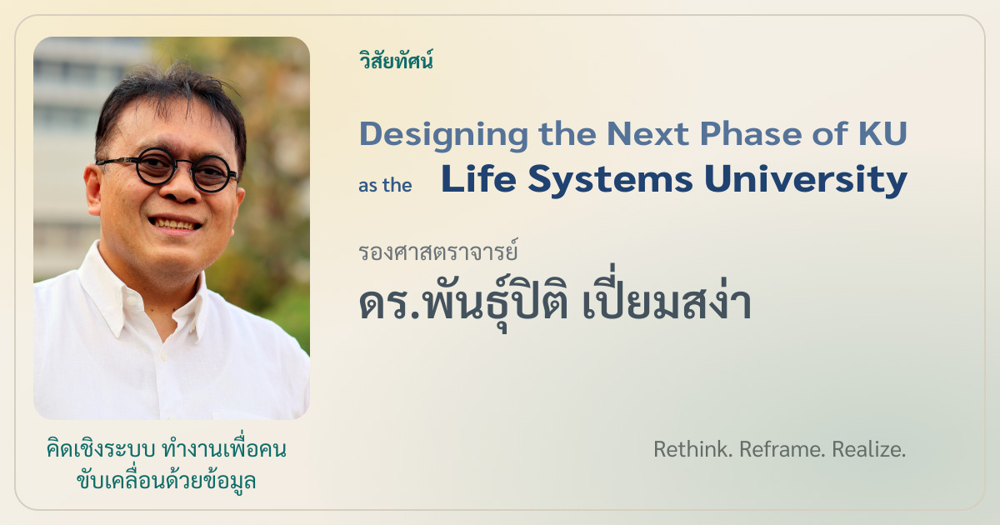

มหาวิทยาลัยกับระบบของชีวิต
กรอบคิดที่เชื่อมเกษตร อาหาร สุขภาพ พลังงาน สังคม วิศวกรรม และความยั่งยืน เพื่ออธิบายบทบาทของมหาวิทยาลัยต่อประเทศ
หน้านี้เก็บกรอบคิดเรื่องมหาวิทยาลัยในฐานะระบบความรู้ ระบบคน ระบบข้อมูล และระบบความรับผิดชอบต่อสังคม โดยจัดใหม่เป็นงานเขียนระยะยาว

กรอบคิดที่เชื่อมเกษตร อาหาร สุขภาพ พลังงาน สังคม วิศวกรรม และความยั่งยืน เพื่ออธิบายบทบาทของมหาวิทยาลัยต่อประเทศ

ความยั่งยืนของมหาวิทยาลัยต้องรวมถึงระบบที่ทำให้คนทำงานวิชาการอยู่ได้ เติบโตได้ และสร้างผลงานที่มีความหมายได้